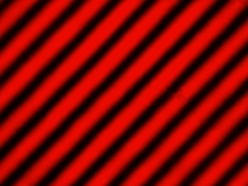

Interferenz von einzelnen Photonen
Übersicht
Einzelne Photonen sind Quantenobjekte mit ganz bestimmten Eigenschaften. Im Experiment Existenz des Photons und Quantenzufall wurde gezeigt, dass einzelne Photonen unteilbare Portionen sind und sich absolut zufällig verhalten. In diesem Abschnitt wird mit der Interferenz eine weitere Quanteneigenschaft vorgestellt. Die Interferenz kann sowohl im Interferometer (Kapitel 1-5) sowie am Doppelspalt (Kapitel 6) beobachtet werden.
In Kapitel 1 wird die Interferenz im Interferometer mit klassischem hellen Licht erklärt. Das gleiche Experiment wird in Kapitel 2 mit einzelnen Photonen durchgeführt. In Kapitel 3 werden die Quanteneigenschaften Interferenz, Unteilbarkeit und Zufall gleichzeitig an einem einzelnen Photon gezeigt. Die Aufprägung einer Weginformation und das Löschen der Weginformation mit einem Quantenradierer wird in Kapitel 4 gezeigt. In Kapitel 5 geht es für Experten um die Kohärenzlänge von einzelnen Photonen, um die Energiekorrelation von Photonenpaaren und um die Interferometrie von weißem Licht. Die Interferenz und die Beugung von hellem Licht und einzelnen Photonen am Doppelspalt wird in Kapitel 6 behandelt.
Interferenz im Interferometer:
|
Kapitel 1 |
|
|
Kapitel
2: |
|
|
Kaptiel 3: |
|
|
Kapitel
4: |
|
|
Kapitel
5: |
Für Experten: Kohärenz, Energiekorrelation und weißes Licht |
Interferenz und Beugung am Doppelspalt:
|
Kapitel 6: |
Doppelspalt mit hellem Licht und einzelnen Photonen |

Interferenzmuster von hellem Licht (633nm)